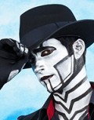

Steam Powered Giraffe
Steam Powered Giraffe (SPG) é um projeto musical vindo de San Diego, na Califórnia. Ele foi formado em 2008 pelos irmãos gêmeos David Michael Bennett e Isabella “Bunny” Bennett. Juntos com um grupo de artistas com histórico em teatro, o grupo assume o papel de autômatos antigos e a companhia robótica que os construiu!
Gênero musical: Variável, passando do Rock para o Pop e outros estilos dependendo da música.
Membros atuais
Rabbit
(interpretada por Isabella “Bunny” Bennett)

The Spine